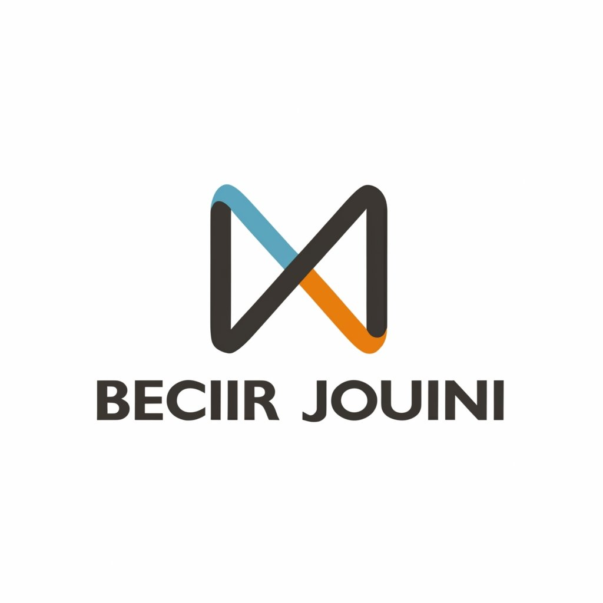

|  | Accueil | Parcours Académique | Expériences Professionnelles | Contact |
|---|
| DATE | DESCRIPTION |
|---|---|
| 2020/2021 | j'ai obtenu la mention "Très bien" au baccalauréat technique du lycée Zahrouni |
| 2021/2022 | 1 ér année cycle preparatoire à l'institut préparatoire des études d'ingénieur EL MANAR |
| 2022/2023 | 2 ér année cycle preparatoire à l'institut préparatoire des études d'ingénieur EL MANAR et admission au concours en classe préparatoire |
| 2023/2024 | Actuellement inscrit au cycle d'ingénieur à l'ESPRIT, je me spécialise dans l'informatique . M'offrant l'opportunité d'approfondir mes connaissances et de rester à jour avec les dernières avancées technologiques |
Certificat en Développement Web Full Stack
croco coder, tunis, 2023
En parallèle de mes études universitaires, j'ai obtenu un certificat en développement web full stack.
Cette formation intensive m'a permis de maîtriser les technologies essentielles
telles que HTML, CSS, JavaScript, Node.js et MongoDB, élargissant ainsi mes compétences en développement.
|